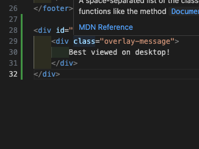
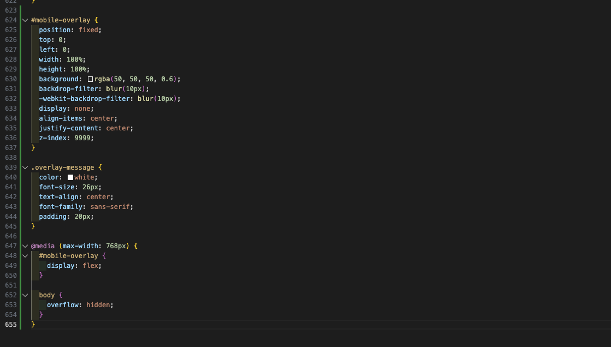

Lab 5
14/March/2026
What I Learned
Mobile Breakpoint Overlay
In this lab, I learned how to add a mobile breakpoint overlay to my website. I did this using:
- HTML - I loaded the instructions into the footer html to make sure the overlay would work on every page
- CSS - To style the overlay and ensure it appears right at 768px
Discussion + Process
In this individualized tech experiment, I created a breakpoint for mobile, which my group needs for our upcoming Galea Garden project. I started by adding html to my footer html to ensure the breakpoint would work on every page on my site. I then added styling to the style css to ensure the breakpoint overlay was styled how I wanted it. I set the breakpoint at 768px, which is standard. I then used blur to create a frosted glass effect. This experiment was much easier than I expected, as I only had to add html once to the footer, allowing the overlay to work on any page on my site. To see the overlay in action, resize your browser on this site! See the screenshots below for my code.
Project Screenshots

